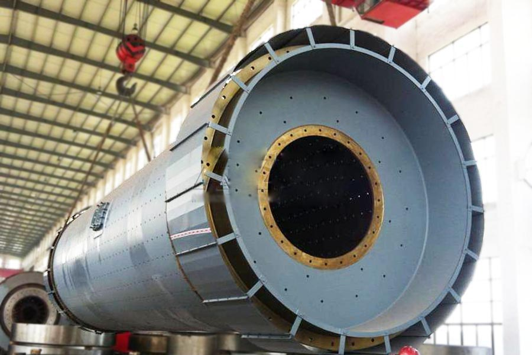
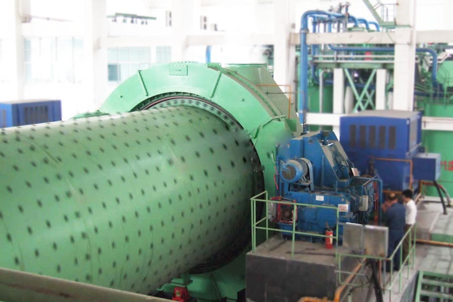

- Home >
- milling equipment >
- cement grinding table segments

Construction waste crushing production line

Mobile construction waste crushing station for urban construction waste crushing.
cement grinding table segments
cement grinding table segments Category
(1) Ordinary cement mill: for most ordinary cement mill circuit grinding system, which is characterized by high grinding efficiency, mill yield, power consumption province, especially when grinding slag cement, the performance of more prominent . General mill output can be increased by 15-20%, power consumption is reduced by about 10%, in addition, the finished temperature can be reduced 20-40 ℃, the product fineness is also easy to adjust.
(2) High yielding fine cement mill: high yielding fine cement mill is mainly used for open circuit grinding system. Which is characterized by the system equipment and the process is simple, low investment, the plant less area; in the mill structure using advanced special compartment inside the separator means, fine grinding compartment increases the activation device, there is dedicated end mill discharge grate plate, to minimize the size of the grinding media warehouse grinding, greatly improving the grinding efficiency, to achieve high yield, low energy consumption purposes.

Cement mill use
After the cement mill is the material to be broken, and then to smash the key equipment. Cement mill is widely used in cement, silicate products, new building materials, refractory materials, fertilizer, ferrous and nonferrous metal and glass ceramics and other production industries of all kinds of ores and other grind-able materials can be dry or wet grinding .
Cement mill consists of feeding part, discharging Department, Rotary Department, Transmission Division (reducer, small transmission gear, motors, electrical control) and other major components. Cast steel hollow shaft, lined with removable, rotary gear hobbing by casting process, the body inlaid cylinder liner wear, has good abrasion resistance. The machine running smoothly, work reliably.
Cement mill technical parameters
| Specification (m) | Mill form | Transmission form | Reducer | Motor Power (kw) | Production capacity (t/h) | Weight (t) | |
| Model | Ratio | ||||||
| φ1.83×7 | Open flow | Edge | ZD60 | 4.5 | 245 | 6.5-8 | 36 |
| φ2.2×7.5 | Circle Flow | Edge | ZD70 | 5 | 380 | 8-10 | 56 |
| φ2.2×11 | Open flow | Center | D110 | 35.5 | 630 | 12-13 | 104.6 |
| φ2.2×13 | Open flow | Center | D110 | 35.5 | 630 | 16-18 | 114 |
| φ2.4×13 | Open flow | Center | D110 | 35.5 | 800 | 20-23 | 171.5 |
| φ2.6×13 | Open flow | Center | MFY100 | 19.5 | 1000 | 28-32 | 149.7 |
| φ3×9 | Circle Flow | Edge | D125 | 41.2 | 1000 | 28-36.5 | 136.4 |
| φ3×11 | Circle Flow | Center | D140 | 42.8 | 1250 | 36-47 | 180 |
| φ3.2×13 | Open flow | Center | D140 | 36.5 | 1600 | 45-50 | 198 |
| φ3.8×13 | Open flow | Center | MFY250 | 16.5 | 2500 | 60-62 | 204 |

Cement mill works
Cement mill is a horizontal cylindrical rotating device, outer gear, the two positions, lattice-type ball mill. Material from the feed device evenly into the mill first warehouse into the compound by the air shaft spiral, the warehouse has ladder liner or corrugated liner, built with different specifications steel ball, rotating cylinder produces centrifugal force to the ball a certain height after the fall, have severe impact on the material and abrasive. The material in the first position reached kibble, after single-layer diaphragm plate into the second warehouse, the warehouse lined with flat lining, the steel ball, the material to further grinding. Powder is discharged through the discharge grate plate to complete the grinding operation.
Leave Me A Message, Now
If you have any questions regarding equipment prices, production line configuration or other problems, you can send a message to us, we will contact you soon.